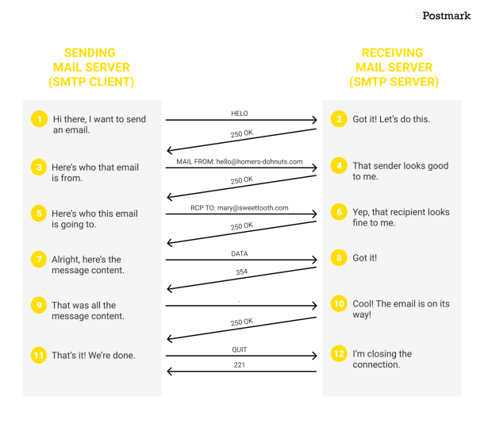

GUIDE: Electronic Mail
E-mail is not a protocol. SMTP is a protocol. E-mail, and the protocols in use with e-mail sending/receiving, is complicated to integrate into a website natively. It will be easier to first learn by knowing the basics.
A general discussion will reveal there are many ports operating email. The below definitions help to explain some of the mechanics underlying the definitions.
- Port 25 SMTP
- Port 109 POP2
- Port 110 POP3
- Port 143 IMAP4
- Port 465 SMTPS
- Port 587 MSA (used by SMTP servers)
- Port 993 IMAP4 (encrypted)
- Port 995 POP3 (encrypted)
- Other: 2525, 32587, etc.

- Internet Message Acces Protocol (IMAP)
- Supports connecting multiple clients to the same mailbox simultaneously.
- Mail Submission Agents (MSA)
- Used by mail clients to submit messages for delivery by an SMTP server.
- Post-Office Protocol (POP)
- Stores messages delivered by SMTP. a.k.a. POP3 downloads the messages to recipient client.
- Simple Mail Transfer Protocol (SMTP)
- Used to transport mail for message relay. STARTTLS can be enabled.
- Simple Mail Transfer Protocol Secure(SMTPS)
- SMTP encrypted by implicit TLS.